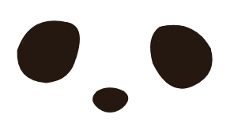

COOLPADEL
Manual de Identidad Visual v1.0
Estándares visuales, anatomía del logotipo, paleta cromática, reglas de la firma de marca de agua en contenido audiovisual y tono de comunicación.
Unimos la pasión del deporte con el diseño coleccionable y la innovación tecnológica. Huimos de la estética corporativa aburrida y apostamos por un carácter enérgico, fresco y simpático.
Dotamos a clubes de pádel, torneos y academias de merchandising prémium (llaveros 3D de goma personalizados) y tecnología de repetición en pista (Save my Play) para monetizar y fidelizar a sus jugadores.
Hablamos claro, sin rodeos ni tecnicismos vacíos. Somos cercanos, ágiles y obsesionados con que cada producto y vídeo transmita la emoción de un partidazo de pádel.
Composición vertical: Mascota centrada arriba + Wordmark en la base. Aplicar en portadas, catálogos, dorsos de prendas y packaging central.
Lettering gestual exclusivo. "COOL" en Cyan + "PADEL" en Naranja con la letra "P" integrada como cabeza de la mascota. Aplicar en cabeceras web, faldones y cintas.
Pelota de pádel esférica bicolor con relieve curvo blanco, rostro minimalista expresivo y brazos abiertos. Aplicar en avatares, llaveros 3D y pegatinas.

Tres manchas icónicas. Sello identificativo obligatorio en la esquina superior derecha de todo contenido audiovisual y fotográfico.
En redes sociales (Instagram Reels, TikTok, YouTube Shorts), los ojos de CoolPadel deben posicionarse SIEMPRE en la esquina superior derecha. De este modo quedan libres de los controles de la app (Likes, compartir y comentarios están abajo a la derecha, y títulos abajo a la izquierda).

¡Puntazo de volea con efecto por 3 metros! 🎾🔥 Grabado con cámaras automáticas en pista central.
Esquina superior derecha. Margen superior: 60-80px. Margen derecho: 60-80px (en resolución vertical 1080x1920).
Sobre fondos oscuros o jugadas nocturnas: versión Blanca (opacidad 85%). Sobre tomas claras o diurnas: versión Espresso Dark (#251810).
Ancho de entre 90px y 120px en exportación Full HD vertical. Debe ser identificable al instante sin obstruir la vista de la bola.
Energía, pista, dinamismo y entusiasmo.
Moqueta oficial, frescura, juego limpio.
Ojos, extremidades, calidez frente al negro puro.
Línea de costura en relieve, separación y contraste.
Google Fonts · Pesos recomendados: Bold (700) y Black (900).
Google Fonts · Pesos recomendados: Regular (400) y SemiBold (600).
Excelente legibilidad en dispositivos móviles, fichas de producto y catálogos.
Nuestra gama de llaveros de pádel personalizados se produce mediante inyección de PVC de alta precisión en relieve tridimensional multicapa.